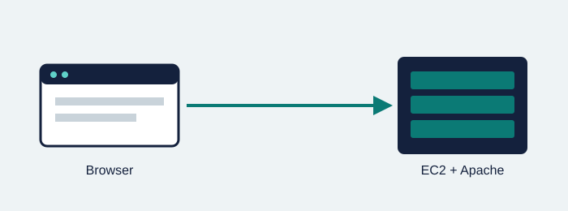
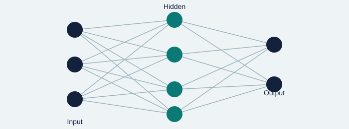

Projects

Project 1: Portfolio on EC2 with Apache
Description: A multi-page portfolio website served by Apache on an Amazon EC2 instance (Lab 04).
Technologies: AWS EC2, Apache, Security Groups, HTML, CSS
My contribution: Launched and secured the instance, installed and configured Apache, and designed all pages.
GitHub repository
Project 2: Image Classifier with a CNN
Description: A convolutional neural network that classifies small images into ten categories using the CIFAR-10 dataset.
Technologies: Python, TensorFlow, Keras, NumPy, Matplotlib
My contribution: Prepared the data, designed and trained the model, and evaluated accuracy with confusion matrices.
GitHub repositoryProject 3: Movie Review Sentiment Analysis
Description: A text classifier that labels movie reviews as positive or negative.
Technologies: Python, scikit-learn, pandas, NLTK
My contribution: Cleaned the text, built TF-IDF features, compared several models, and reported precision and recall.
GitHub repository